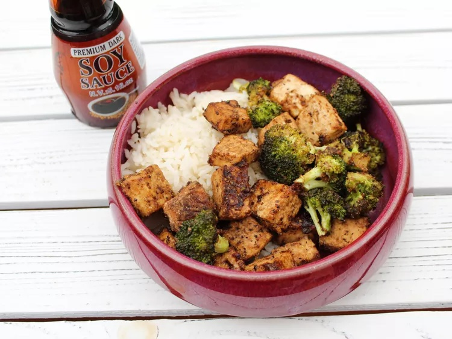

Sheet Pan Black Pepper Tofu and Broccoli

Description
For this sheet pan black pepper tofu and broccoli, tofu and broccoli are combined with sesame oil, soy sauce, garlic powder, ginger powder, and black pepper, then baked using a little cornstarch to crisp up the ingredients. Serve over rice to make it a finished meal.
Ingredients
- 1 (16 ounce) package extra-firm tofu
- 1 head broccoli, separated into florets
- 3 tablespoons sesame oil
- 3 tablespoons soy sauce
- 2 tablespoons cornstarch
- 1 1/2 tablespoons garlic powder
- 1 teaspoon ground ginger
- 1 1/2 tablespoons freshly ground black pepper
Steps
- Slice tofu into thirds lengthwise so you have 3 even slabs. Stack the slabs on top of each other and slice through them lengthwise to make 3 even columns, then slice across to make 5 even rows.
- Lay tofu evenly on a plate lined with a couple layers of paper towels. Layer more paper towels on top of the tofu and place another plate on top of the stack. Press out as much water as possible and let sit for at least 30 minutes.
- Preheat the oven to 400 degrees F (200 degrees C). Line a baking sheet with parchment paper.
- Transfer pressed tofu and broccoli into a mixing bowl. Drizzle with sesame oil and soy sauce; toss lightly to combine. Mix cornstarch, garlic powder, ground ginger, and black pepper together in a small bowl; sprinkle over tofu and broccoli. Toss until evenly coated, and arrange in one layer on the prepared baking sheet.
- Bake in the preheated oven for 10 minutes. Flip and continue baking until crispy, about 10 minutes more. Serve warm.
Home